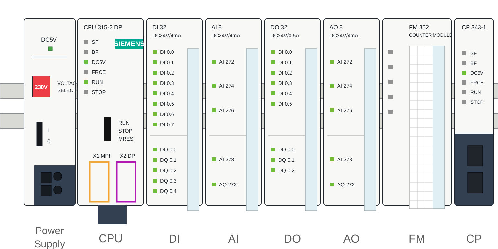
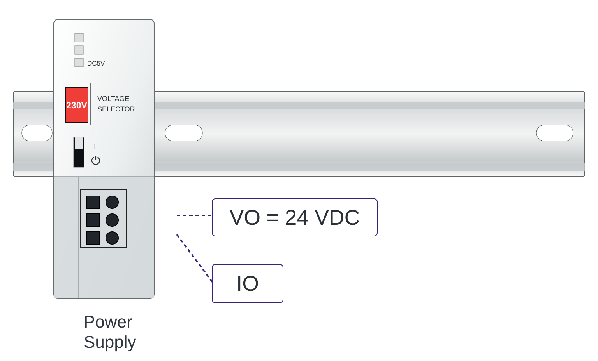

Texto Explicativo da Aula
Introdução ao CLP e sua Estrutura Física
O Controlador Lógico Programável, conhecido pela sigla CLP (ou PLC, do inglês Programmable Logic Controller), é um equipamento eletrônico industrial projetado para automatizar processos por meio da execução de programas lógicos. Para compreender seu funcionamento, é fundamental conhecer a estrutura física que o compõe, pois cada componente desempenha uma função específica e indispensável dentro do sistema de controle.
A base física que sustenta todos os componentes do CLP é chamada de rack (ou bastidor). O rack é uma estrutura metálica que abriga os módulos em posições chamadas slots (ou slots de encaixe). Essa organização modular é uma das grandes vantagens dos CLPs modernos, pois permite que o sistema seja configurado, ampliado ou modificado conforme as necessidades do processo industrial, sem a necessidade de substituição completa do equipamento.

Módulo de Alimentação (Power Supply)
O primeiro slot do rack é tipicamente ocupado pelo módulo de alimentação, responsável por fornecer energia elétrica estável e adequada a todos os demais módulos instalados no rack.
A tensão de saída mais utilizada nesse tipo de módulo é de 24 Volts CC (corrente contínua), valor padrão amplamente adotado na indústria por oferecer segurança operacional e compatibilidade com a maioria dos dispositivos de campo. No entanto, a corrente de saída varia conforme a quantidade e o tipo de módulos instalados no rack. Valores típicos de corrente incluem 2 A, 5 A ou 10 A, sendo necessário calcular o consumo total de todos os módulos para selecionar corretamente a fonte de alimentação.
Importante: Uma fonte subdimensionada pode causar instabilidade no sistema, reinicializações inesperadas do CLP ou até danos aos módulos. Por isso, durante o projeto do sistema, é essencial somar a corrente consumida por cada módulo e selecionar uma fonte com margem de segurança adequada (geralmente 20% acima do consumo calculado).

Módulo da CPU (Central Processing Unit)
O segundo slot é reservado para a CPU, o núcleo central do CLP. A CPU é responsável por três funções fundamentais:
- Leitura das entradas: A CPU lê continuamente o estado dos sinais provenientes dos módulos de entrada, verificando, por exemplo, se um sensor foi acionado ou se um botão foi pressionado.
- Processamento da lógica: Com base nas entradas lidas, a CPU executa o programa de controle fornecido pelo engenheiro ou técnico responsável. Esse programa é geralmente escrito em linguagens padronizadas pela norma IEC 61131-3, como Ladder Diagram (LD), Function Block Diagram (FBD), Structured Text (ST), entre outras.
- Acionamento das saídas: Após processar a lógica, a CPU envia comandos para os módulos de saída, que por sua vez acionam os dispositivos de campo (motores, válvulas, alarmes, etc.).
A CPU executa esse ciclo continuamente em um processo denominado ciclo de varredura (scan cycle), que ocorre em milissegundos, garantindo o controle em tempo real do processo industrial.
Módulos de Entrada e Saída (I/O)
Após a CPU, o rack pode receber diversos módulos de entrada e saída (I/O — Input/Output), que são responsáveis pela interface entre o CLP e os dispositivos de campo. A seleção desses módulos depende diretamente das características dos sinais presentes no processo.
Entradas Digitais (Digital Input Module)
Os módulos de entrada digital recebem sinais do tipo ligado/desligado (0 ou 1), provenientes de dispositivos como:
- Botoeiras e chaves de fim de curso
- Sensores indutivos, capacitivos e ópticos
- Chaves de pressão e temperatura com saída discreta
Cada módulo de entrada digital pode comportar entre 8 e 32 canais de entrada, dependendo do modelo selecionado.
Entradas Analógicas (Analog Input Module)
Os módulos de entrada analógica recebem sinais contínuos, geralmente nas faixas de 4-20 mA (corrente) ou 0-10 V (tensão), provenientes de instrumentos como:
- Transmissores de temperatura (PT100, termopar com transmissor)
- Transmissores de pressão e vazão
- Sensores de nível
Esses sinais são convertidos internamente em valores numéricos que a CPU utiliza para monitorar grandezas físicas com precisão.
Saídas Digitais (Digital Output Module)
Os módulos de saída digital enviam sinais do tipo liga/desliga para dispositivos como:
- Contatores e relés (para acionamento de motores)
- Solenoides e válvulas on/off
- Sinalizadores e alarmes luminosos
Saídas Analógicas (Analog Output Module)
Os módulos de saída analógica geram sinais contínuos (geralmente 4-20 mA ou 0-10 V) para controlar dispositivos que exigem ajuste proporcional, como:
- Válvulas proporcionais e posicionadores
- Inversores de frequência com referência analógica
- Atuadores com controle de posição ou velocidade
Módulos de Função (Function Modules — FM)
Algumas aplicações industriais exigem o processamento de sinais com alta precisão e velocidade, superior à capacidade dos módulos de I/O convencionais. Para essas situações, existem os Módulos de Função (FM — Function Modules).
A principal característica dos FMs é que eles possuem processamento independente da CPU principal, ou seja, executam suas tarefas com seu próprio microprocessador interno. Isso garante maior precisão e velocidade de resposta, sem sobrecarregar a CPU principal.
Exemplos de aplicações que utilizam FMs:
- Contagem de alta velocidade: leitura de encoders em eixos de alta rotação
- Controle de posicionamento: servo-acionamentos com controle preciso de posição
- Controle PID avançado: malhas de controle com alta exigência de tempo de resposta
- Leitura de termopares diretamente: sem necessidade de transmissor externo
Módulo de Comunicação (Communication Processor — CP)
Os CLPs modernos precisam se comunicar com outros equipamentos e sistemas, como supervisórios (SCADA), outros CLPs, painéis de operação (IHMs) e redes corporativas. Para isso, as CPUs já vêm equipadas com portas de comunicação integradas, compatíveis com redes industriais como:
- MPI (Multipoint Interface): protocolo proprietário Siemens para comunicação entre CLPs e ferramentas de programação
- Profibus: rede de campo amplamente utilizada para comunicação com dispositivos de campo e periféricos distribuídos
- Profinet: versão baseada em Ethernet industrial, com alta velocidade e compatibilidade com redes TCP/IP
Quando a aplicação exige portas de comunicação adicionais ou protocolos não disponíveis na CPU, utiliza-se o Módulo de Comunicação (CP — Communication Processor). O CP é instalado no rack como qualquer outro módulo e expande as capacidades de comunicação do sistema sem necessidade de substituição da CPU.
Racks de Expansão
Em processos industriais de maior porte, onde o número de sinais a serem monitorados e controlados é elevado, pode ser necessário instalar racks de expansão. Esses racks adicionais são conectados ao rack principal por meio de módulos de interface e permitem ampliar significativamente a capacidade de I/O do sistema, mantendo a mesma CPU de controle.
Critérios de Seleção dos Módulos
A seleção correta dos módulos é uma etapa crítica no projeto de um sistema CLP. Os principais fatores a considerar são:
Exemplo Prático Aplicado
Cenário: Automação de uma Estação de Mistura de Produtos Químicos
Uma indústria química deseja automatizar uma estação de mistura que possui os seguintes componentes e sinais:
Dispositivos de campo:
- 3 sensores de nível (analógicos, 4-20 mA)
- 2 sensores de temperatura (PT100 com transmissor 4-20 mA)
- 4 botoeiras de comando (digitais)
- 3 fim de curso em válvulas (digitais)
- 2 válvulas proporcionais de dosagem (saída analógica 4-20 mA)
- 3 contatores para acionamento de agitadores (saída digital)
- 1 encoder em agitador principal (contagem de alta velocidade)
- Comunicação com supervisório via Profinet
Configuração do rack do CLP:
Resultado: Com essa configuração, o CLP monitora todos os sinais de processo, controla os atuadores com precisão e fornece dados em tempo real ao sistema supervisório, garantindo segurança, rastreabilidade e eficiência no processo de mistura.
Questões de Múltipla Escolha
-
Qual é a função principal do rack em um sistema CLP?
A) Processar o programa de controle e gerenciar as comunicações
B) Fornecer energia elétrica a todos os módulos do sistema
C) Abrigar e organizar fisicamente os módulos do CLP em slots
D) Realizar a interface entre sinais analógicos e digitais
-
Em relação ao módulo de alimentação de um CLP, é correto afirmar que:
A) A tensão de saída varia conforme o número de módulos instalados
B) A corrente de saída é sempre fixada em 10 A, independentemente da configuração
C) A tensão de saída mais comum é 24 VCC, e a corrente varia conforme os módulos utilizados
D) O módulo de alimentação pode ser instalado em qualquer slot do rack
-
A CPU de um CLP executa suas tarefas em um ciclo contínuo chamado ciclo de varredura. Qual é a sequência correta desse ciclo?
A) Processar lógica → Ler entradas → Acionar saídas
B) Ler entradas → Processar lógica → Acionar saídas
C) Acionar saídas → Ler entradas → Processar lógica
D) Ler entradas → Acionar saídas → Processar lógica
-
Um transmissor de pressão com saída em 4-20 mA deve ser conectado a qual tipo de módulo de I/O?
A) Módulo de entrada digital
B) Módulo de saída digital
C) Módulo de saída analógica
D) Módulo de entrada analógica
-
Uma válvula proporcional de controle de vazão, que recebe um sinal de 4-20 mA para ajuste de abertura, deve ser conectada a:
A) Módulo de entrada analógica
B) Módulo de saída analógica
C) Módulo de entrada digital
D) Módulo de função (FM)
-
Qual é a principal vantagem dos Módulos de Função (FM) em relação aos módulos de I/O convencionais?
A) Possuem maior número de canais de entrada e saída
B) São mais baratos e fáceis de instalar no rack
C) Processam sinais de forma independente da CPU, garantindo maior precisão e velocidade
D) Permitem comunicação direta com redes Profinet sem necessidade de CP
-
Em qual situação o uso de um Módulo de Comunicação (CP) é necessário?
A) Quando o processo possui mais de 16 entradas digitais
B) Quando a CPU não possui portas de comunicação suficientes ou não suporta o protocolo exigido
C) Quando se utilizam módulos de função (FM) no rack
D) Quando a fonte de alimentação não suporta a corrente demandada pelos módulos
-
Uma planta industrial possui 120 sinais digitais de entrada para monitoramento. Considerando módulos com 16 canais cada, qual é o número mínimo de módulos de entrada digital necessários?
A) 6 módulos
B) 7 módulos
C) 8 módulos
D) 10 módulos
-
Quando uma aplicação exige mais módulos do que o rack principal comporta, qual é a solução mais adequada?
A) Substituir a CPU por um modelo com maior capacidade de processamento
B) Instalar racks de expansão conectados ao rack principal
C) Reduzir o número de sinais monitorados para caber no rack existente
D) Utilizar exclusivamente módulos de função (FM) para economizar slots
-
Em um projeto de automação, o engenheiro deve considerar qual fator ao selecionar a fonte de alimentação do CLP?
A) Apenas o número de módulos de saída instalados no rack
B) Somente a tensão de alimentação da rede elétrica disponível na planta
C) A soma do consumo de corrente de todos os módulos, com margem de segurança adequada
D) O protocolo de comunicação utilizado pela CPU
Gabarito
1 - C | 2 - C | 3 - B | 4 - D | 5 - B | 6 - C | 7 - B | 8 - C | 9 - B | 10 - C